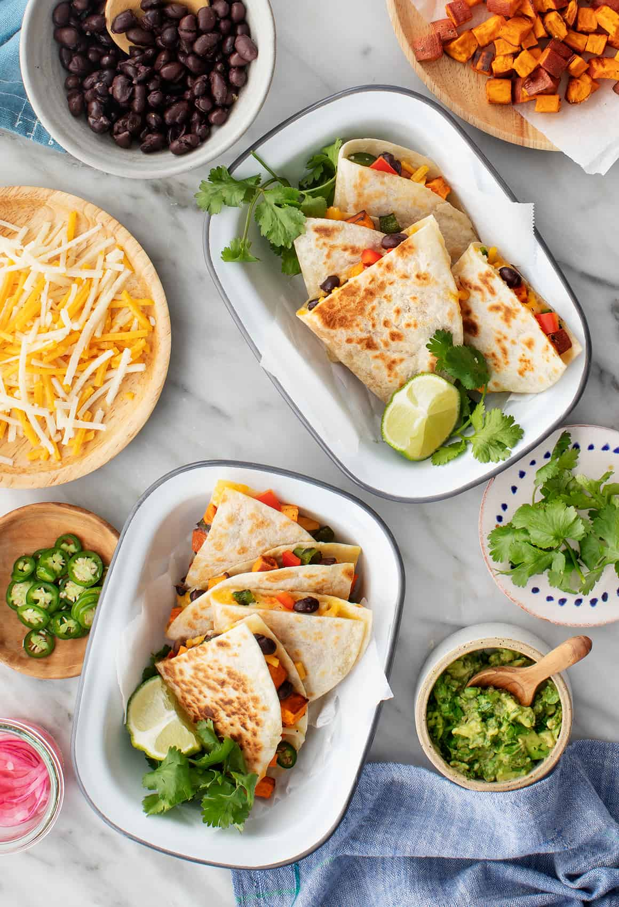

The Little Kitchen
A family food blog with easy, well tasted, family approved recipes!
Dinner Ideas

- Vegan Quesadilla Recipe

Ingredients :
- 2 poblano peppers
- 8 flour tortillas
- 1½ cups shredded vegan cheese, such as Daiya
- 1 sweet potato, diced and roasted
- 1 red bell pepper, stemmed and diced
- 1/2 cup cooked black beans, drained and rinsed
- ¼ cup chopped scallions
- 1 serrano pepper, thinly sliced, optional
Instructions :
- Roast the poblanos. Char the peppers over a gas burner or under a broiler until the skin is blackened all over. Remove them from the heat, place in a bowl and cover with a towel or plastic wrap for 10 minutes. Uncover and use your hands to peel and remove the loose skin. Slice off the stem, and remove the seeds, and slice it into strips.
- Assemble tortillas with sprinkles of cheese, sweet potatoes, poblano slices, bell pepper, black beans, scallions, and serrano, if using. Fold each tortilla in half and cook in a hot skillet for about 2 minutes per side. Serve with guacamole, salsa, lime wedges, serranos, and cilantro.
- Vegan Burrito Bowl